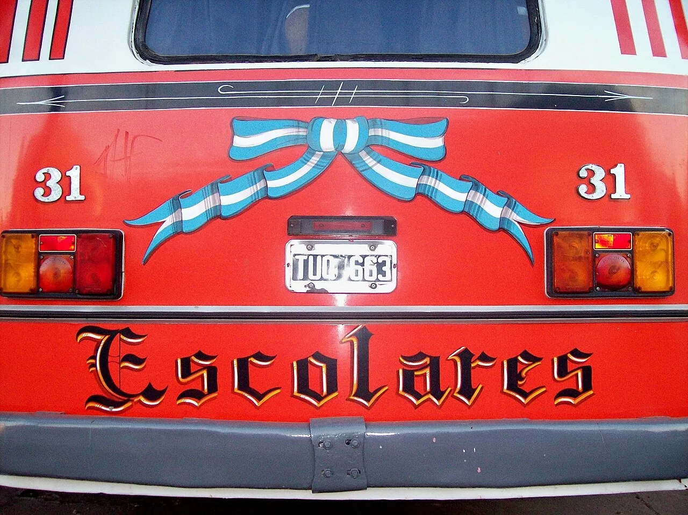

Un aviso comercial tiene que resolver una jerarquía antes que una ornamentación: qué palabra se ve primero, desde qué distancia y cuánto espacio necesita. La rotulación pintada convierte esas decisiones en una presencia sobre el muro. El encargo empieza con alguien que necesita anunciarse y alguien que sabe darle forma visible a esa necesidad.
La fachada impone restricciones concretas: una puerta interrumpe el campo, un cable atraviesa el nombre, el negocio necesita destacar un producto. El aviso permite leer cómo se resolvieron esas condiciones. Antes de juzgarlo como pintoresco o anticuado, conviene observar la palabra principal, los contrastes y el ajuste a la superficie. Allí aparecen decisiones que una fotografía centrada únicamente en las letras puede dejar fuera.
Roxana Martínez Vergara y Juan José Lozano Arango estudian la rotulación como práctica de diseño en Colombia en Desacatos 73, de 2023. El proyecto Letras hechas a mano, de la Universidad de los Andes, reúne investigación y documentación de pintores avisistas. Ambas referencias permiten tratar los letreros como trabajos con autores, aprendizajes y encargos, en vez de imágenes populares sin procedencia. [1] [2]
Rotular exige construir palabras a la medida de una superficie. El tamaño del nombre, los márgenes y la relación con precios o productos deben ajustarse a puertas, persianas y muros. Un boceto o una guía pueden orientar el trabajo; al pintar hay que comprobar proporciones y corregir sobre el soporte. La destreza se reconoce en esa coordinación entre lo que el ojo calcula y lo que la mano consigue ejecutar.


Pintar e imprimir exigen resolver una composición. Lo que cambia es la relación con el soporte y la manera de corregirla o reproducirla. En el aviso pintado, una fachada angosta y una persiana extensa piden distribuciones distintas. También importa la distancia: un nombre debe reconocerse antes que la información que se consulta al acercarse. El oficio organiza esa secuencia de atención mediante tamaño, contraste y espacio.
La relación entre letras pintadas y reproducción industrial necesita examinarse por encargos y lugares. Un comercio puede recurrir a herramientas distintas para el nombre de la fachada, una promoción temporal o el precio de un producto. Su coexistencia vuelve insuficiente la historia de una técnica que simplemente reemplaza a otra. Importa saber qué se necesita cambiar, con qué frecuencia y quién puede hacerlo sobre esa superficie.
El filete porteño ofrece un caso relacionado, con otra historia y otro repertorio. La UNESCO lo inscribió en 2015 como técnica pictórica tradicional de Buenos Aires. Ese reconocimiento no convierte el filete y los avisos colombianos en una misma tradición; permite preguntar cómo cambia una práctica cuando adquiere circulación patrimonial. [3]
El reconocimiento patrimonial puede abrir mercados y cambiar el uso de un repertorio. Un motivo antes ligado a un vehículo puede trasladarse a una prenda, un objeto o una identidad comercial. Para valorar ese recorrido habría que seguir a quienes lo producen: qué encargos reciben, cómo deciden y qué conocimiento consiguen transmitir. Conservar el motivo visible es solo una parte de la continuidad del oficio.
La impresión digital y el vinilo cambian los modos de preparar, reproducir y reemplazar un anuncio. La herramienta no determina por sí sola su calidad. La investigación de Rebeca Isadora Lozano Castro sobre gráficas comerciales de Cotopaxi y Tampico propone estudiar producciones tecnopopulares: formas de comunicación que obligan a revisar una separación demasiado simple entre tradición manual y tecnología. [4]


Fotografiar, clasificar y digitalizar un aviso modifica su circulación. Si sus letras se convierten en referencia para otro proyecto, conviene identificar al rotulista, documentar el encargo y acordar créditos y usos. El acceso a una imagen no resuelve esas relaciones. Una investigación gana precisión cuando permite encontrar a quien hizo el trabajo y entender qué decisiones tomó.
Hay, además, una dimensión urbana que merece ser tomada en serio. Los letreros forman parte de la experiencia de orientación y reconocimiento de una ciudad. No solo identifican establecimientos; producen ritmos visuales, establecen jerarquías en las fachadas y dan cuenta de la diversidad de actividades económicas que conviven en una calle. Un taller mecánico no necesita hablar como una cafetería; una tienda de barrio no tiene por qué parecer una sucursal bancaria; una peluquería puede construir su propia presencia sin recurrir al mismo lenguaje de una cadena comercial. Esa diversidad no garantiza belleza ni orden, pero constituye una forma de pluralidad visual. La ciudad que permite distintas maneras de anunciarse también permite que sus habitantes aparezcan en ella con lenguajes propios.
Una documentación útil reúne la imagen con el lugar, la fecha, el autor cuando pueda identificarse y las condiciones del encargo. Registrar materiales, cambios y vocabulario del oficio permite comparar decisiones entre calles y épocas. Esa información evita que la fotografía conserve únicamente un estilo y pierda la práctica que lo produjo.
Leer un aviso desde el diseño significa reconocer qué resuelve sobre esa superficie y bajo esas condiciones. La letra pintada puede ser precisa, repetitiva, inventiva o difícil de leer; ninguna de esas cualidades debe decidirse de antemano por su carácter manual. La ciudad escrita a mano merece atención porque vuelve visibles trabajos y economías que una clasificación puramente estilística dejaría fuera.
Fuentes.
- Martínez Vergara y Lozano Arango — Cuatro reflexiones sobre la rotulación popular, Desacatos 73, 2023
- Universidad de los Andes — Letras hechas a mano
- UNESCO — decisión de inscripción del filete porteño, 2015
- Lozano Castro — Producciones tecnopopulares, Kepes 20(27), 2023
Ensayo documental. Colombia, Buenos Aires, Cotopaxi y Tampico se leen como casos distintos. Sin recorrido de campo ni registro fotográfico propio.
Fuentes consultadas el 13.11.2026. Interpretación y edición: RUMMOR. Edición de prueba para revisión.